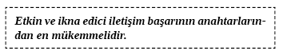
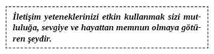
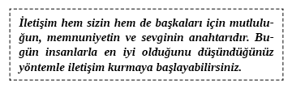
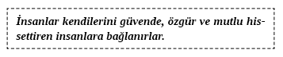
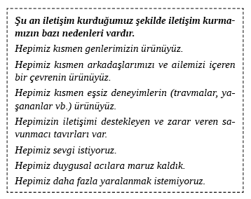
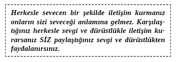
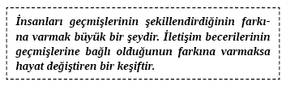
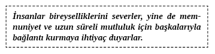

2. BÖLÜM - KONUŞARAK KENDİNİZİ BAŞARIYA GÖTÜRMEK
Bu kitapla birlikte yılın diğer kısmının daha iyi geçmesini umdum ve bunu sevgiyle yazdım. O zaman evlilikten, ebeveynlikten, milyon dolarlık şirketleri yönetmeye kadar her şeyde mükemmeliyete ulaşmış harika iletişim kuran yüzlerce insanla görüştüm. Dünyadaki bütün terapistlerin en sık karşılaştıkları sorunları bulmak için psikoterapi ve hipnozla tedavi alanlarındaki insanlarla konuştum. Psikoterapistlerin çoğu insanlar daha iyi iletişim kurarlarsa daha az duygusal ve psikolojik problemler yaşayacakları konusunda hemfikirler.
Finansal başarılar elde etmiş kişilerle konuşulduğunda, mükemmeliyete ulaşan insanların hayatlarında iz bırakan konuların aynılarına rastlanır. Birincisi, bu insanlar mükemmel iletişim kuran, kendilerine güvenen, kendilerine inanan, kendilerine bağlı olan insanlardır.
İkincisi, bu insanlar diğer insanlarla iyi iletişim kurmaya eğilimlidirler. Toplumun her kesiminden başarılı bireyler kişiler arası iletişimde uzmanlaşmışlardır. Mükemmeliyete ulaşmış insanların, diğer insanları inandıklarından daha fazlası olabileceklerine ikna edebildikleri görülmektedir. Çok başarılı insanın, mükemmeliyete ulaşmaları için diğer insanlara ilham verme ve onları motive etme becerileri olduğu görülmektedir. Genellikle hayatın her alanında başarı ve başarısızlık arasındaki fark empati, açıklık ve olumlu bir tavırla iletişim kurma yetisidir.
Bir psikoterapist ve zirveye ulaşım koçu olan Wendi Friesen’dan benimle ve sizinle birkaç hikâye paylaşmasını istedim.
Wendi uzun zamandır tanıdığım bir arkadaşım. Bir eğitimci ve psikoterapisttir. Dahası insanların hayatlarının tutkulu ve romantik yanlarını hipnoz kullanarak büyük ölçüde geliştirmeye yönelik çalışmalarıyla uluslararası platformda tanınır. Wendi’nin kariyeri, Pasifik Borsası seçenekler tabanı üzerine piyasa düzenleyicilerine eğitim vermeyi de içerir. Wendi’nin sevdiğim yanlarından biri de geçmişin bu gününü ve bu gününün de geleceğini nasıl değiştirdiğini görme yeteneğidir. İletişim becerilerini kolay anlaşılabilir hale getirme ustalığı iyi bilinir. Wendi bu kitapta, bazı en sevdiği iletişim hikâyelerini ve insanlara kendini dinletebilmek için gereken konuşma stratejilerini paylaşacak. Zirvedeki bütün insanlar başka yerlerden başlamışlardır ve bunlar benim özellikle ilginç bulduğum hikâyelerdir. Tam da bu kafa yapısıyla, işte Wendi ve onun eskiden radyoda insanlara konuşmaya yönelik korkusunu nasıl aştığının öyküsü:
Radyo istasyonunu aramaya karar verdiğim gergin bir andı. Bir süre hipnozla yönlendirilen zihin gücünün insanlar için gerçekten neler yapabileceğini paylaşmak istedim. Hipnoz insanların daha iyi bir gelecek yaratmalarına yardım edebilir. Hipnoz insanların yaşadıkları acıyı azaltmalarına, sigarayı bırakmalarına, daha iyi notlar almalarına, kulak çınlamalarının sesini bile azaltmaya yardım edebilir.
İletişim Korkularınızı Nasıl Aşarsınız?
İşimle ilgili heyecanlı olsam da psikoterapi ve radyo konularında yeniydim. Düşüncelerimi ifade etmede ‘en iyi’ şeklinde algılanmam pek de olası değildi. O sohbet programının sunucusu bana bu programa çıkmak isteyip istemediğimi sorduğunda tabii ki de evet dedim. (Telefonu kapattıktan sonra “Off” gibi bir şey dedim.) Programdan bir gün önce 50.000 watt’lık istasyonda bir radyo programına çıkmanın kötü fikir olacağına dair çok baskın bir hisse kapılana kadar sorunu açıkça göremiyordum. Hakkında soru sorulacak hiçbir şarkım, tanıtımı yapılacak hiçbir kitabım ve hiçbir fikrim olmadığı düşünülürse kafamda soru işaretleriyle kalakalmıştım. Bilirsiniz ya, gelip çatan ‘o gün’ endişem giderek arttı. Heyecandan neredeyse hasta olabileceğinizi düşündüğünüz o gün... Geri çekilmeyi düşündüm. Konuşmayı seviyorum ama Sacramento’nun 200 mil çevresindeki insanların zihinlerinde kendimi tam bir budalaya çevirmeyi istemediğimden çok emindim.
İptal etme gibi bir seçenek söz konusu olmadığından, tam o anda bir yöntem tasarladım ve bu yöntem ertesi günkü programa çıkma konusunda o akşamı heyecan içinde geçirmemi sağladı. Yalnızca heyecanlı olmak değil aynı zamanda güvenli ve hatta kitleler önünde tam anlamıyla parlak zekâlı hissetmek istedim.
Geleceğime doğru ‘açılmaya’ karar verdim. Ülke çapında yüzden fazla radyo programına çıktığımı ve bunun da onlardan biri olduğunu hayal etmeye karar verdim. Aslında bu programlara çıkmaktan neredeyse sıkıldığımı ama bu seferki yerel bölgemde olduğundan eğlenceli olabileceğini ve kendimi heyecanlı hissedebileceğimi fark ettim. Gelecekte olduğumu farz ettiğim bu anda geçmiş programlarda nelerden bahsettiğimi, hangi konuların en eğlenceli olduğunu, stüdyodaki kahkaha seslerini, telefon edenlerin ne kadar eğlenceli olduğunu ve vermek istediğim mesajı aktarmanın ne kadar iyi hissettirdiğini hatırlamak için kendime izin verdim. Diğer radyo stüdyolarının nasıl göründüğünü hatırladım. (Hayatımda hiçbir radyo stüdyosunda bulunmamıştım.) Kendi sesimi ve nasıl da hep doğru zamanda doğru şeyi söylemeyi bildiğimi hatırladım.
Bütün akşam boyunca bunu yaptım ve hatta yolda arabayla giderken diğer arabalardaki insanların beni daha önce medyada göründüğüm için tanıdıklarını bile hayal ettim. O insanlar gülümseyerek onaylayıcı ifadelerle bana bakarken çok cesaret vericiydiler. Nasıl da biliyorlardı! Ertesi sabah gergin ve heyecanlı bir şekilde uyandım. O andan itibaren hastalanmamı önleyecek yeni güçlendirici ifademi tekrarladım: “Konuşmak için ağzımı açtığım an, huzurlu ve rahat olacağım.” Bu güçlendirici cümle ağzımın önünde kocaman bir mikrofon varmış hissi de uyandırıyordu.
Ertesi sabah tam bir profesyonel gibi konuştum ve bundan gurur duydum. Mümkün olmadığını (benim için) düşündüğüm birçok farklı şekilde iletişim kurdum. Telefon eden kişilerin problemlerine yaratıcı fikirler ve çözümler ürettim ve bir cevap veremediğimde bile güldük ve eğlendik. Geleceği hayal etmem işe yaramıştı. Zihnimizin vücudumuzu nasıl etkilediğine dair son zamanlarda okuduğum bir kitaptan bahsettim ve kitaptan hatırlamadığımı düşündüğüm bazı ifadeler kullandım. Sonraki günlerde yüz elliden fazla telefon aldım. Bunlardan bazıları sadece sesimin ne kadar doğal ve profesyonel geldiğine dair bana iltifatta bulunmak içindi.
Hayatımda iki saat boyunca yüzlerce, binlerce insana konuşmayı bırak beş kişilik bir gruba on dakika boyunca bile konuşma fırsatı bulunmayacağını anladığımda bütün bunlardan en önemli dersi çıkarttım. Ben de sizin gibiydim. Topluluklara hitap eden bir konuşmacı değildim ama bu deneyimi kazanmak istiyordum.
Şimdi başka bir tercih yapmış olduğumu farz edelim. Programdan bir önceki akşamı ne kadar hazırlıksız, bilgisiz ve heyecanlı olduğumu fark ederek geçiriyorum. Canlı yayında ilk on dakikadan sonra teşekkür ettiklerinde bunun ne kadar üzücü olacağını hayal ediyor ve evden çıkmak üzere anahtarlarımı elime alıyorum. Midemdeki bulantıya odaklanıp daha da kötü hale gelmesine neden oluyorum. Bütün gece kendime, “Bunun üstesinden nasıl geleceğim? Ya donup kalırsam ve söyleyecek tek bir kelime bulamazsam? Yüz bin veya daha fazla kişi önünde kendimi küçük düşürebilirim” gibi şeyler söyleyip duruyorum. Bunu başaracak donanıma sahip olmadığım için istemediğim fikrini güçlendiriyorum.
Kaç kez düşüncelerinizin olumsuz senaryolarınızda kol gezmesine izin vererek iletişim kurmadaki başarınızı sabote ettiniz?
Kendinizi söyleyecek hiçbir şeyiniz olmadığına ikna ederek gerginliğinizi yoğunlaştırdınız mı?
Size bir soru sorulup yorumsuz kaldığınızda ne kadar yıkılacağınızı hayal ettiniz mi?
Geleceği gözde canlandırmak güvensizlikleri, gerginlikleri ve öne çıkan bir konuşmacı olma şanslarınızı sabote edebilecek veya edecek olumsuz içsel diyalogları ortadan kaldırabilir.
Bu tecrübeden sonra ‘Gelecek Vizyonu’ veya ‘Geleceği Gözde Canlandırma’ olarak adlandırılan yöntemi ilk kullanan kişi olmadığımı öğrendim. Binlerce başarılı insan her gün başarı için bu formülü kullanıyor. İşte profesyonellerin bir kişiyle veya bin kişilik grupla iletişimde başarıyı garantilemek için kullandıkları adımlar.
Bir Profesyonel Gibi İletişim Kurmak için Geleceği Gözde Canlandırma Yönteminden Faydalanma
Ya iki yüz kişilik bir sunum ya gidip patronunuzla konuşmak ya da oturup eşinize kendinizi affettirmek için hazırlanıyor olun zihninizin size bu süreçte vereceği akıldan faydalanacaksınız.
1. Yaşayacağınız bütün olaylar ve yapacağınız her şeyin olacağı gelecekte bir zaman aralığı hayal edin. Bu zaman aralığının yaşamak üzere olduğunuz deneyime karşılık bir nokta bulundurmasını sağlayın.
2. Şimdi kendinizi zihnen o olaydan sonraki zamana götürün. Olayın çoktan gerçekleştiğini hayal edin. Kendinizi olayla ilgi detayları hatırladığınız bir ruh haline sokun.
3. Artık her şeyi zarif ve doğal bir şekilde söylediğinize ve size cevap veren dinleyici kitlesine sahip olduğunuza göre nasıl HİSSETTİĞİNİZİN farkına varın.
4. Artık mükemmel bir iş başarıp aynen istediğiniz gibi iletişim kurduğunuza göre bunun zihninizde nasıl GÖRÜNDÜĞÜNE bakın. Yüzünüzde gülümseme ve ne kadar ihtişamlı olduğunuzla ilgili heyecanınızı görüyor musunuz?
5. Bu olaydan sonra kendi kendinizle konuşurken bunun KULAĞA nasıl GELDİĞİNİ fark edin. İç sesinizin, “Vay be! Çok kolaydı”, “Bu kadar mükemmel bir çözüm bulabileceğimi tahmin bile edemezdim” ya da “Kendimle gurur duyuyorum” dediğini duyuyor musunuz? Bu olayın sonucu olarak ürettiğiniz ifadeler neler? Patronunuzun, “Dediklerini takdir ediyorum. Doğru yoldasın” ya da eşinizin, “Evet, nasıl hissettiğini anlıyorum” dediğini veya alkış seslerini duyuyor musunuz?
6. Gözde canlandırdığınız gelecek anına başkalarını dâhil ediniz. Güzel konuşmanızın bir sonucu olarak onların nasıl hissettiğini, sizinle ilgili dediklerini ve daha fazlasını duymak istediklerinin farkına varın. İlham verici sözlerinize başkalarının nasıl cevap verdiğini görerek kendinizi neşelendirin.
7. Deneyiminizin nasıl gittiğine yönelik gelen inancınız ne? Şimdi kendinizi güvenli ve ilginç bir insan olarak görüyor musunuz? Kendinizle ilgili yeni şeylerin, akıcı ve ikna edici bir şekilde konuştuğunuzun farkında mısınız? Fevkalade bir iş çıkardığınız için kendinizi kutlarken rahat hissediyor musunuz? Gelecekteki bu anda kendinizi harikulade iletişim kuran bir insan olarak yaşamaya istekli misiniz?
Kendinize bu oyunu oynamak için ne kadar çok zaman verirseniz, yaratıcı ve ikna edici bir şekilde ve kalpten konuşmak sizin için daha kolay olacaktır. Bu gelecek anının gerçek olduğunu GÖRME, HİSSETME, DUYMA ve buna İNANMAYA isteğinizin oranı gerçekten fevkalade bir konuşmacı olabilme oranınıza paraleldir.
Zirvede olanların hayata geldikleri anda başarıya kavuşmadıklarını hatırlayın. Bazıları hayatlarının erken bir döneminde insanların kendilerine güven duymalarını sağlayan ve yaşamlarını şekillendiren deneyimler yaşamışlardır. Diğerleriyse bu yöntemleri hayatlarının ilerleyen zamanlarında öğrenmek zorunda kalmışlardır. Yine de geçmişlerindeki korkuları, fobileri ve negatif programlamayı aşmışlardır. Bunu ne zaman öğrendiğiniz önemli değil. Öğrenmeniz önemli. Geleceğinizi sürekli şu an oluyormuş gibi yaşayarak süreci büyük oranda hızlandırabilirsiniz.
Sizin için zihinsel engeller teşkil eden zor deneyimler yaşadıysanız onları gelecekte nasıl yaşayacağınız konusunda seçme şansınız var. Tanımadığınız insanlarla dolu bir odada olduğunuzu düşündüğünüzde kötü hislere odaklanabilirsiniz veya bu deneyimden hemen sonra geleceği düşleyebilir ve geçmişte yaşananları atlatmanın ne kadar iyi hissettirdiğini hayal edebilirsiniz. “Geçmişi geçmişte bırakmak çok güzel değil mi? Tanışmadığım insanlarla konuşmak hoşuma gidiyor. Onları hep çok ilgi çekici bulmuşumdur” gibi şeyler söylerken kendinizi duyun.
Peki, radyo programının nasıl gittiğini hâlâ merak ediyor musunuz? Hayatımı değiştiren bir deneyimdi. Şüphelerimi, korkularımı ve kusma isteğimi bastırarak kendime nasıl bir hediye verdiğimin farkında vardım. Sonsuza kadar sahip olacağım kendimle ilgili yeni bir inanç, konumla ilgili konuşabileceğime ve söyleyecek çok fazla şeyim olduğuna dair bir inançla ortaya çıktım. Zihinlerimizin bütün öğrendiklerimize, okuduğumuz kitaplara ve ettiğimiz sohbetlere ulaşımı olduğuna inanıyorum. Zihnimizin doğru bilgiyi doğru zamanda anımsayacağına inanıyorum. Bu inanç, kendimi geleceğe sürekli götürmem ve ortaya çıkacak zorlukla gerçekten yüzleşmeden sonucu da gerçekmiş gibi yaşamamın bir sonucu. Zihnim bilinçsizce herkesle her koşulda konuşurken rahat olduğuma inanıyor. Bilinçsiz olarak zihnim bu olayları gerçekmiş gibi algılayıp bu sonuçları desteklemeye yönelik inançlar benimsedi. Şimdi sosyal bir ortama, bir toplantıya, sunuma gittiğinizde ya da eşinizle oturup konuştuğunuzda zihniniz doğru zamanda doğru şeyi söylemenize yardım edecek.
Wendi’nin radyodaki korkusunu aşmasına dair anekdotu, başaramayacaklarını düşünen insanlar için mükemmel bir hikâye. Wendi, daha sonra mükemmel ve pek de mükemmel olmayan, eğitimcilerle deneyimleri hakkında başka bir hikâyesini paylaşacak.
Başarı = İnsanlar Dinlesin Diye Konuşmak ve İnsanlar Konuşsun Diye Dinlemek
Hayatta başarı neredeyse tamamen kendinizle ve başkalarıyla ikna edici iletişim kurma yeteneğinize bağlıdır. Geliriniz; hayatı bütün yönleriyle yaşama yeteneğiniz, değerleriniz ve prensiplerinizle yaşama yeteneğiniz, mutluluk ile sevgiyi yaşama yeteneğiniz başarı içerebilir ama yalnızca bunlar değildir. Çoğu insan başarı yolculuğunun bir parçası olarak kendileriyle konuşmayı hiç düşünmez. Bu da insanların hayatta ulaşmak istediklerine ulaşamamalarının sıklıkla tek nedenidir. İletişim kişiler arası, kişisel ve kişiler ötesidir. Başarının bütün açılarını ele alacağız. Hiçbir sır kalmayacak!

İlk bakışta, ‘yalnızca insanlarla konuşup onların açılmasını sağlayabilsek’ bu mükemmel bir şey gibi görünür. Ancak ne biz konuşuruz ne de onlar açılırlar. Konuşarak insanlara ulaşmak bir soğanı anımsatır. Ortasına, içine gelene kadar katmanları birer birer soyarsınız. Her katman diğerine bir noktada bağlıdır. Her katman ayrıdır ama yuvarlağın sonunda birbirine bağlıdır. İnsanların da birtakım yaşanmışlık seviyeleri ve katmanları vardır. Her yaşanmışlık katmanının o kişi tarafından kabul görmek için özel bir tür iletişim gerektiren, kendine özgü nitelikleri vardır. Daha sonra kabul edildiği zaman, çoğu insanın sadece kendisinin hissettiği ve çoğunun hiç yaşamadığı orta kısma ulaşana kadar diğer katmana geçebilirsiniz. Bu orta kısım ‘benlik’tir. Bu sizsiniz ve ‘kendiniz’ söz konusu olunca çok korumacısınız ve bu da iletişimin bazen çok güçleşmesinin bir nedenidir.
Bu kitap değişik seviyelerde ve katmanlarda insanlarla nasıl iletişim kuracağınızı gösterecek. Keşfedeceğiniz üzere, bir önceki seviyede güven ve samimiyet oluşturmadan birbiri ardından gelen seviye ve katmandan geçemezsiniz. Bu gerçek insanlarla konuşma ve onları dinlemedeki aksaklıkların çoğunun nedenidir.
Bu kitabın her sayfasını çevirdiğinizde, kendi hayatlarının akışında ilerleyen insanlarla tanışacaksınız. İnsanların sizinle rahat ve güvende olmalarını nasıl sağlayacağınızı öğreneceksiniz. İnsan deneyimleri olağanüstü şeylerdir. Günlük yaşamda karşılaştığımız güçlüklere, engellere, kalp kırıklıklarına rağmen bu hayatı yaşıyoruz. Yaşamın bizim için hazırladığı güçlüklerin arasında mutlu olmak için etrafımızdakilerle iletişim kurma yeteneğimiz var. Düşündüklerimizi, fikirlerimizi, felsefelerimizi ve isteklerimizi paylaşabiliriz. İletişim kurma yeteneği gerçekten inanılmaz. İyi iletişim yeteneğimiz sayesinde insanların kalplerine ve zihinlerine ulaşabiliriz. İşte bu fevkalade stratejiler ve teknikler bir gün demir gibi sertken, diğer gün pamuk gibi yumuşak olmanızı sağlayacak.

Bir adım geri çekilip hayatınıza şöyle bir bakın. Yaptıklarınızdan memnun musunuz? Yapmayı planladıklarınızı başarmaya başladınız mı? Etrafınızdakilere sevgi gösterip kibar davranıyor musunuz? Dünyada gerçekten fark yaratmaya başladınız mı? Hak ettiğiniz gelir ve yaşam tarzına sahip misiniz?
Bugün seçtiğiniz hayatı sürme şansınız var. Kendinizle ve başkalarıyla bağlantı kurmaya başlayacaksınız. Yakında hayatı her yönüyle yaşamak için kendi benliğimizle ve başkalarınınkiyle bağlantı kurma zorunluluğunu keşfedeceksiniz. Bugün kendimizle ve başkalarıyla nasıl konuşacağımızı öğrenmeye başlayacağız. Bugün iletişimin mutluluk ve sevginin temel taşı olduğunun farkına varacağız. Kurduğunuz her iletişim başka bir insanın kendine güvenini oluşturması için mükemmel bir fırsattır.

Hemen bağlantı kurabildiğiniz bir veya birden fazla insanla hiç karşılaştınız mı? “O gerçekten farklı biri. Onu tanımak isterim” dediğiniz oldu mu hiç? Artık yapabilirsiniz. Bir açıdan o insanla ilgili karizmatik bir yön keşfettiniz. Bazen o kişi de sizde aynı şeyi keşfedebilir ama daha sonra zamanla ya da belki anında bir soğukluk olur ve kendi yollarınıza gidersiniz. İnsanlarla bağlantı kurmak yalnızca fiziksel çekimden fazlasıdır. Yine de önemli ve gayet gerçektir. İnsanlarla bağ kurmak, bir insanın başka birini görüp benzer yanlar keşfetmesiyle gerçekleşir.
Zirvedeki İnsanlar Diğer İnsanlarla Bağ Kurmada Çok İyidirler
Neden ‘zirvede’ olmak arzu edilir? Bu yalnızca benlik temalı 1980’lerden kalma bir konu değil mi? Hiç de değil. Aslında tam tersi. İnsanlarla anlaşmadan bir sevgili, öğretmen veya satıcı olmanın mükemmelliğine erişmek âdeta imkânsızdır. İş hayatında diğer insanlarla anlaşma yeteneği şirket yöneticilerinin çok para ödediği bir şeydir. Bu gün yeni milenyumun başlangıcında şirketler, çalışanlarının iletişim becerilerini geliştirmek için yılda milyarlarca dolar harcıyor. Kimse herkesle iyi geçinemez ama çoğunlukla ilişki kurabilenler ortalama olarak diğerlerinden daha başarılıdırlar.
Bu başkalarıyla iletişim kurma becerilerini geliştirmeden önce göz önünde bulundurulması gereken başka bir deneyim seviyesidir. Aslında fikir çok basit: Muhtemelen bir nedenle var oldunuz. En nihayetinde mutluluğu bulmak ve başkalarıyla deneyimler paylaşmak için varsınız. Başkalarına neşe vermek için varsınız. Bir veya daha çok özel nedenle varsınız.
Bu kitapta daha sonra bu nedenlerin neler olabileceğini ve onları nasıl bulacağınızı keşfedeceksiniz. Dünyadaki en başarılı insanlar ‘bir nedenle’ yaşarlar. Büyük başarı hocası Napoleon Hill gerçekten başarıya ulaşmak için en büyük amacınızın ne olduğuna karar vermek zorunda olduğunuzu öğretmiştir. Bu herkesin hayatı için geçerli olmasa da özellikle daha mutlu ve memnuniyet verici bir yaşam kurmak için harika bir kuraldır.
En sevdiğim motivasyonel konuşmacılarından biri Zig Ziglar’dır. Zig her zaman, “Eğer diğer insanlara hayatta istediklerini elde etmelerinde yeteri kadar yardım ederseniz siz de hayatta istediğiniz her şeyi elde edebilirsiniz” der. Diğer insanlarla nasıl konuşacağınızı öğreneceksiniz ki onların hayattaki başarı yolculuklarında yardımcı olabilesiniz. Bu kitap size başkalarıyla sözlü ve daha da önemlisi sözsüz olarak nasıl iletişim kuracağınızı öğretecek. Bu kitap kendi büyülü cininiz olmanıza yardım edecek.
İnsanlarla bağ kurmak, olumsuz hayat deneyimleriyle gücünü kaybeden doğal bir yetenektir. Bugünden itibaren bu tamamen değişecek. Hayatta ilerledikçe ve deneyim kazandıkça birçok insanla bağ kurma fırsatı bulacaksınız. Konuştuğunuz ya da göz teması kurduğunuz her insana bakın ve onlara sizinle kim olmak istiyorlarsa o kişi olmaları özgürlüğünü tanıyın. Onlara, size karşı açık olabileceklerini bilmenin güvenini sağlayın. Onları yargılamayacağınızı bilsinler. Son olarak da sizinle bağlantılı ve sizden ayrı olmalarına izin verin. Eğer bunu yaparsanız diğer insanlar için bir mıknatıs haline gelirsiniz.

İnsanları güvende, huzurlu ve mutlu hissettirmek kadar muazzam bir göreve yardımcı olmayı nasıl başarıyoruz? Hepimiz çok farklıyız. Örneğin farklı şeyler insanları güvende hissettirir. Çok farklı ihtiyaçlar, istekler ve çıkarlar var. Bir insanı neyin daha özgür ve huzurlu hissettireceğini bilmek kolay değildir. Aslında yabancıların olduğu bir ortamda ne diyeceğimizi genellikle bilemiyoruz. Bu nedenle yere bakmaya ve geçerken göz teması kurmamaya özen gösteriyoruz. Başka insanlarla bu sevgi, bu mutluluk, bu güven hissini oluşturmak için özellikle ne yapmamız gerekiyor? İnsanları tanıdığımızda bile onlarla bizim için en önemli bazı sorunları ve konuları konuşmak oldukça zordur.
Eşimizle veya bizim için özel kişiyle seks hakkında nasıl konuşuyoruz? Akrabalarımızla din konusunda nasıl konuşuyoruz? Arkadaşlarımızla politika konusunda nasıl konuşuyoruz? Sevdiklerimizle nasıl dürüst iletişim kurup yine de ilişkimizin sağlam kalmasını sağlayabiliyoruz? Bu kolay değil ama mümkün. (Bütün bu soruları hemen ele alacağız.)

Muhtemelen siz de çoğu insan gibi neden birbirimizden çok farklı şekilde iletişim kurduğumuzu merak edersiniz. Muhtemelen bazı insanların size daha çok açılmasını ve bazılarının da sizi dinlemesini istersiniz. Belki daha da önemlisi insanlar olarak hayvanlardan, makinelerden üstünlüğümüzü ve bizi özel kılan bir şeyi çoktan fark etmişsinizdir. Son olarak, eşsizliğimiz kadar önem arz eden, bize herkesle bir şekilde bağlantılı olduğumuzu hissettiren ortak bir özelliğimiz de vardır.
Bu kitap, tanıştığınız her kişiyle onların sizin için ne kadar özel ve sizinle ne kadar bağlantılı olduklarını fark edeceğiniz bir iletişim kurmanıza yardım edecek.
Bir insana söylenen her sözün o kişinin fiziksel ve ruhsal durumunu ya güçlendirdiğini ya da zayıflattığını biliyor muydunuz? Sözleriniz ve yaklaşımlarınız o kadar güçlü ki gerçekten bağ kurduğunuz herkesin varlığını, zihin durumunu değiştirebilirsiniz.
Kendimizi ve başkalarını beslemek için bizler aracı olmalıyız. Bu özellik, başarılı insanları bu kadar başarılı kılan itici güçtür. Bunu yalnızca iletişim yoluyla yapabiliriz. Dünyadaki çoğu insan için baskın iletişim yöntemlerimiz sözlü ve sözlü olmayan iletişimdir. Yine de bu kitap gibi yazılı metinleri okumak ve kinestetiğin alanında bulunan, çok güçlü iletişim aracı olan dokunmaktır.
Ne söylediğiniz ve onu nasıl söylediğiniz yalnızca başka insanların deneyimlerini etkilemez aynı zamanda sizinkini de etkiler. Nötr olarak algılanacak birine söyleyecek çok az şey vardır. İletişimin neredeyse tamamı bilinç veya bilinçaltı seviyesinde ‘pozitif’ ya da ‘negatif’ kabul edilir. Biz başkalarıyla konuştukça bunun sizin ve benim için anlamı çok derindir. Biz başka insanlar için pozitif ve negatif ‘enerji’ oluştururken aynı oluşumu kendimiz için de kabul ederiz. (İsa bunu şu şekilde ifade etmiştir: Ne ekerseniz, onu biçersiniz.) Başka bir deyişle, başkalarına sarf ettiğimiz sözler ve yönelimlerimiz pozitif enerjiyle doluysa o zaman bizim üzerimizdeki etkileri de gerçekten onlarla tamamen aynıdır.
Milyonlarca insan düşmanca bir tonda iletişim kurmak dışında (mevcut bilgi ve anlayışlarıyla) başka hiç iletişim kuramazlar. Düşmanca biriyle sevecen iletişiminiz muhtemelen istenilen şekilde sonlanmaz. Aslında o kadar çok insan kendi benlikleriyle bağlantıyı koparmışlardır ki toplum için zarar teşkil ederler. Bu insanlar genellikle hayatlarının çoğunu başkalarına karşı şiddet suçlarından hapiste geçirirler. Elbette bu insanlar da birer candır ve hepimiz aynı kumaştanız. Tek fark, onların fiziksel deneyimlerinde ve kendilerine-başkalarına karşı davranışlarında umursamazlığa neden olan birçok nedenlerinin bulunmasıdır. Ağlayan ruhu saran kabuk o bilinç seviyesinde bir taş kadar soğuktur ki ilgi ve güvence arayan ruhun yakarışı bilinç seviyesinde yalnızda anti-sosyal davranış olarak anlaşılır. Bu içinde bulunması acı veren bir durumdur.

Sizin gerçek ve iç benliğinizin; en nihayetinde dürüst, doğruluk, cesaret ve güven dolu iletişim kurmaya ihtiyacı vardır. Hepimizin kabul görmeye gereksiniriz. Eğer başkalarını oldukları gibi kabul ederseniz âdeta onları çeken bir mıknatıs haline gelirsiniz. Siz de ben de özgürlük ve güvenliğe ihtiyaç duyuyoruz. Arkadaşlarınız ve aileniz de kabul görmek ister. Onlar da sizinle aynı kumaştandır. Arkadaşlarınız, aileniz ve çalışanlarınız sevginize, nezaketinize ve kabulünüze ihtiyaç duyar. Hepimiz sevgiyi ister ve ona ihtiyaç duyarız. Hepimiz önemsenmek isteriz. Hepimiz bağımsız olmak isteriz. Hepimiz güvende ve güvenli hissetmek isteriz.
Ofisimde her gün beş saat psikoterapist olarak çalışıyorum. Genellikle hipnoanaliz adlı güçlü bir iyileştirme yöntemi kullanıyorum. İnsanlar dünyanın her yanından beni görmeye geliyorlar. Uzmanlığım, kronik yorgunluk sendromu, fibromiyalji1 ve özellikle kulak çınlamasından rahatsız insanlar üzerine. Tabii ki anksiyete, depresyon, TSSB (Travma Sonrası Stres Bozukluğu), yeme bozukluğu gibi başka sorunları olan insanlara da bakıyorum ama genellikle asıl uzmanlık alanlarıma yoğunlaşıyorum.
İnsanlar binlerce psikoterapist ve hipnoterapisti bırakıp bana geliyorlar çünkü ben sadece bu acımasız sorunlardan muzdarip insanlarla çalışmakla kalmıyorum; bu sorunları bizzat yaşayıp çoğunu atlattım. Yaptığım işin reklamını yapmam hiç gerekmedi. Bu sorunları paylaşan insanlar arasında iyi haber ağızdan ağıza dolaşıyor.
Çok önemli olduğunu keşfettiğim bir iletişim unsuru da dinlemektir. Dinlemek benim için pasif bir süreç değildir. Bu insanların konuşmalarını bitirmelerini bekleyip sizin konuştuğunuz anlamına gelmez. Ben kişinin acısı, içsel deneyimleri ve hastalığına nasıl tepki verdiğini anlamak ve bunun gibi şeyler hakkında sürekli daha çok bilgi edinmek için dinlerim. Soruları ve onlara ek soruları defterime not ederim. Aslında bir danışanla iki saatlik ilk seansta yalnızca on beş dakika konuşabilirim. Nedeni basit. İnsanlar kısmen hastalar çünkü kimse onları dinleme zahmetinde bulunmuyor. Ben daha terapiye yönelik ‘müdahalelerime’ başlamadan yaptığım basit bir durum analizinden sonra ofisten çıktıklarında önemli oranda iyi hisseden insanlara rastladım. Neden mi? Ben gerçekten dinliyorum. Meraklıyım ve baktığım insanlara o kadar önem veriyorum ki içimde onları destekleyen bir yan olduğunu biliyorlar. Yalnızca onları önemsemekle kalmayıp onların sağlık ve huzurlarının da savunucusuyum. Onların gelecekteki mutluluk ve sağlıklarının savaşçısıyım. Onlarla daha iyi olmaları için çalıştığımı biliyorlar.
Ailenize ve arkadaşlarınıza baktığınızda onların mutluluğu, sağlığı ve huzurunun savunucusu olmayı bir düşünün. Kendi hikâyelerinizi onlarınkine ekleme ihtiyacı duymadan özellikle nasıl daha iyi dinleyebilirsiniz? Sevdiklerinizle iletişim için özellikle nasıl ‘güvenli bir alan’ yaratabilirsiniz? Anlayacağınız üzere bunu bilinçli olarak nasıl yapacağımız hakkında gerçekten düşünmek zorundayız çünkü hayat bize her zaman iyi davranmadı. Yol boyunca iletişim yeteneğimizi azaltan bazı deneyimler yaşadık. Doğuştan çok iyi başlıyoruz ama olaylar yakında keşfedeceğiniz şekilde gerçekleşmeye başlıyor.
Nasıl Şu An Olduğumuz Kişi Oluruz?
Bu hayatta başınıza gelenler oldukça derin deneyimlerdir. Her birimiz bu hayatta sahip olacağımızdan çok daha fazla ortak noktayla dünyaya geliyoruz. Hepimiz doğuştan aynı değiliz elbette. Ancak hayat devam ettikçe iyi veya kötü yönde değişiriz. Hayatta başımıza gelenlerin çoğu kalbimizi güçlendirip ruhumuzu zayıflatır. Yaşamın denemeleri ve güçlüklerinden geçtikçe bu bizi etrafımızdakilerden daha da uzaklaştırır. Pek de istenmeyen bu hayat deneyimleri kişiliğimizi iyi ya da kötü yönde değiştirir. Kişilik değiştikçe her insan kendisiyle farklı yollarla iletişim kurulmasına ihtiyaç duyar.
Kişiye ona acı çektiren bir insanı hatırlatan iletişim negatif şekilde sonuçlanacaktır. Bir kadının bir erkeği yıllardır arkadaş olarak bildiğini gözünüzde canlandırın. Bu arkadaş kadına her zaman alçak sesle ve nazikçe konuşur. Bir gün adam kadına tecavüz eder. Kadın alçak sesle konuşan, hatta onunla arkadaş olan bütün erkeklere yönelik sırf bu korkunç deneyim yüzünden olumsuz bir tepki geliştirebilir. Her olası durumda, insanın bir yanı bütünü korumaya yönelik davranır. İnsanlar tekrar acı çekmek istemez ve bu yüzden başka şiddet vakası yaşanmasın diye savunma mekanizması geliştirir. Alçak sesle ve nazikçe konuşmak, bu kadının ruhunun taşlaşmış yanını açmak için çözüm olmayacaktır. Bu yalnızca sizi ondan uzağa iter. Bu yüzden iyi ya da kötü HER çeşit deneyimi olan HER çeşit insanla nasıl iletişim kurulacağını öğreneceksiniz. Birine sevgi olarak gelen şey başkası için savaş sinyali şeklinde algılanabilir.
Tekdüzelikten Çıkıp Zirveye Giden Yolunuza Başlayın
Başka insanlara karşı kayıtsız kimselerle dolu bir dünyada yaşıyoruz. Benlik hissimize ve başkalarıyla ilişkilerimize karşı kayıtsız davranıyoruz. ŞİMDİ bu tekdüzelikten çıkacağız.
Zirveye giden yola nasıl başlayacağınızı biliyor musunuz? Geriye dönüp bugün bulunduğumuz yere nasıl geldiğimizi görmekle başlar. Her karşılaştığınız kişinin ‘programlanmış’ olduğunu ve çeşitli iletişim kurma yöntemlerine neden şu anki gibi tepkiler verdiklerini anlamak istiyorsunuz. Bunlar çok derin konular. Dolayısıyla sonraki birkaç bölümü iki kez okumaktan çekinmeyin.
Doğduğunuz andan bunları okuyana kadar başınıza gelen her şey hayatınızı şekillendirdi. İnsanlar size çocukmuşsunuzcasına ya da kaba konuştuğunda kendinizi savunmuş veya geri çekilmiş olabilirsiniz. Kendinizi savunduğunuzda bakış açılarınız değerli veya haksız görülmüş olabilir ya da fiziksel olarak istismar edilebilirsiniz. İletişiminize karşılık aldığınız tepkiler bugüne, siz bu kitabı okumaya başlayana kadar iletişim kurma şeklinizi değiştirmiştir.
Olumsuz Hayat Deneyimleri İletişiminizi Nasıl Şekillendirir?
Küçük bir kız kendinden büyük yetişkinlerin asılsız suçlamalarına karşı kendini savunduğunda ona sürekli vurulduğunu düşünün. Sonra bu kız kendini savunmanın güvenli ve akıl kârı olmadığını öğrenmeye başladı ve bir şeyle suçlandığında öylece geri çekilmeyi alışkanlık edindi. Ne de olsa kendini savunmak için zarar görmeye değmezdi. Neden boş yere uğraşsın ki! Küçük kız büyür ve dünyanın adil olmadığına, kendininse değersiz olduğuna inanır ve kendi fikirlerini beyan etmek için nadiren konuşur. Açılmak istemez çünkü doğruyu söylediğinde acı çekeceğini bilir. Bu gün küçük kız kendini hislerini ifade etmenin çok güç olduğu bir ilişkide bulur. Genelde insanlara ve özellikle otorite figürlerine güvenmez. Kendinden hoşlanan kişilere açılmaz. Ruhu bu mükemmel insanları çekici bulmaz. Bir seviyede başkalarının iletişimini görmezden gelerek insanlar yapmasa da içinde bir parça onu sabote eder. Dâhil olmak istemez çünkü açı çekmek istemez.
Yan evde oturan başka küçük bir kız aynı koşullarda büyümüş olabilir ama bir nedenden ötürü karşılık verir. Pes etmez ve ona yönelik kötü muamelelere ve acıya katlanır. Onu boş yere suçlayan yetişkinlere ve başka insanlara hatalarını söyler. O da acı çekmiştir ama biraz farklı yetişmiştir. Dünyanın adil olmadığını, insanların kötücüllüğünü görmüştür ama bunu umursamamıştır. Hayatta ayakta duracak ve bir savaşçı olacaktır. Bu kadınla tanışan insanlar onun dominant, kalın derili ve uğraşması zor biri olduğunu düşünürler. Sertleşmiş bir kabuğu vardır ve en alakasız durumlarda kendini şiddetle savunur. Kendinin yönettiği ve etrafındakilerden hiç olumsuz tepkiler almadığı ilişkilerle ilgilenir. Anlaşması güç, ‘diş bileyen’, sinirli genç bir kadın olabilir.
Yine bu iki kızın yakınında, benzer şartlarda yetişen başka bir küçük kız vardır. Ancak bir nedenden dolayı pek konuşmaz. Komşularına olanları görür ve konuşmanın mantıksızlığına karar verir. Konuşmak yalnızca kavgalara ve anlaşmazlıklara yol açar. Anlaşmazlıklar insanların acı çekmesine neden olur ve o acı çekmez istemez. ‘İyi bir kız’ olup sessizce durmaya karar verir. Sessiz olup hiçbir soruna bulaşmazsanız darbe görmezsiniz. Küçük kız büyür. Çoğunlukla mesafeli, içine kapanık ve sessizdir. Başka insanların mutlu olmasını ve kavga etmemesini ister. Huzuru bozmayacak şeyler yapar ve yalnızca sevilmek ister. Hiçbir deneyimi olmadığı için başka şekilde iletişim kurmayı pek bilmez. Başkalarıyla hislerini paylaşmamıştır. Paylaşırsa yaralanacağından korkar. Bu nedenle hislerinden, onu zor durumlara sokan şeylerden bahsetmemenin en iyisi olduğuna karar verir.
Bu üç kadın da kısmen çocukluktan gelen iletişim yöntemleri geliştirmişlerdir. Bir kere anladınız mı fark etmesi kolaylaşsa da bu yöntemlerin değişmesi güçtür. Başka birçok yöntem vardır. Bazıları bir çocuk olarak kendilerine yöneltilen davranış şekline karşı çıkarlar ve karşısındakilere onlara davranıldığı gibi bir şey yapmayacaklarının bilinçli olarak farkındadırlar. Başka çocuklar da acı çekerek büyümüşlerdir ve eğer kendileri yetindilerse çocuklarının da aynı şeyle yetineceğine karar verirler.

Etrafımızdaki kötü iletişim kuran insanların aslında geçmişte çok acı çektiğini fark etmeye başladığımızda onlara karşı tavırlarımız büyük oranda değişir ve empati kurmaya başlarız. Bu kimseleri çabucak kabul ederiz. İletişim kurmadaki zayıflıklarını güçlendirilebilir bir şey olarak görürüz. Size kötü, kaba şeyler söylediklerinde artık bunu kişisel algılamazsınız. Ancak bu noktada bir sorun devam eder: Zayıflığınızı geçip insan olarak güzelliğinizi görmelerini nasıl sağlarsınız? Konuştuğunuzda dinlemelerini nasıl sağlarsınız?
Bazı insanlarla iletişim kurmak tabii ki de ‘imkânsız’dır. Deneyimleri onları bir çeşit zorbaya dönüştürmüştür. İyi Niyetli Ejderha’ları ele alan 12. Bölüm’de zor insanlarla iletişim kurmaya dair daha çok şey öğreneceksiniz.
Sadece birkaç sayfada her çeşit insanla iletişim kurmayı öğreneceksiniz.
Tek iletişim türü dünyadaki bütün insanlarda işe yaramaz. Aslında hepimiz aynı kumaştan yapılsak da manevi deneyimlerimizden çok fiili deneyimlerimizin etkili olduğunu unutmayın. Birbirimizle nasıl iletişim kurmaya ihtiyaç duyduğumuz hususundaki deneyimlerimiz hepimizi farklı kılar. Bazı insanlara karşı doğrudan, açık olabiliriz. Başka birçok kişiyle daha dikkatli, içlerindeki acılara dikkat ederek iletişim kurmamız gerekir. Bazılarının en ufak kişisel detayı paylaşmak için bile uzun süre iletişim kurması gerekebilir. Bazı insanlar, inançlarına ve deneyimlerine yönelik daha önceki saldırılardan ötürü kürtaj, siyaset ve din gibi duyguların devreye girdiği konuları kolaylıkla tartışamazlar.
Bunun iyi yanıysa insanların bu sert veya yumuşak dış görünüşleri altında sevgi, özgürlük, güven, arkadaşlık ve sadakat isteyen bireyler yatmasıdır.

Başkalarıyla kurmayı istediğimiz bağlantı farklı seviyelerde etkin iletişimle sağlanır. Kulağa karmaşık mı geliyor? Öyle olabilir ama çok şükür öyle değil. Bu kitap aracılığıyla demir kadar sert ya da pamuk kadar yumuşak olsanız da kendinizi ve başkalarını gerçekten onurlandırmak için size bazı ipuçları sunulacak.
1 Yorgunluğa, kas ağrılarına neden olan bir çeşit hastalık. (e.n.)